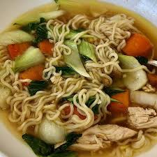

Ramen

Description
This tasty ramen chicken noodle soup with a zesty Asian flair features chicken broth, soy sauce, garlic, ginger, and colorful vegetables, and it's ready in less than 30 minutes.
Ingredients
- 3 ½ cups chicken broth (such as Swanson Original, Natural Goodness, or Organic Chicken Broth)
- ½ red bell pepper, cut into 2-inch-long strips
- 2 green onions, sliced diagonally
- 1 medium carrot, sliced diagonally
- 1 stalk celery, sliced diagonally
- 1 clove garlic, minced
- 1 teaspoon soy sauce
- 1 teaspoon ground ginger
- 1 pinch black pepper
- 1 cup cooked, shredded boneless, skinless chicken breast meat
- 4 ounces uncooked ramen noodles, broken into pieces
Steps
- Combine broth, bell pepper, green onions, carrot, celery, garlic, soy sauce, ginger, and pepper in a 2-quart saucepan over medium-high heat; bring to a boil.
- Stir chicken and noodles into the pan, reduce the heat to medium, and cook until noodles are tender, about 10 minutes.